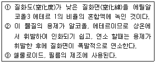
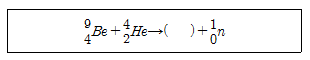
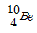
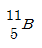
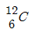
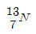
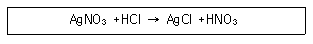
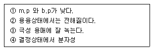
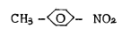
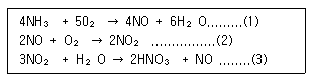

위험물산업기사 (2003-03-16 기출문제)
1과목: 일반화학
1. 다음 물질중 환원제로 이용되는 물질인 것은?
- H2SO4
- HNO3
- KMnO4
- SO2
(정답률: 38%)

2. 다음 중 이성질체가 존재하지 않는 물질은?
- 크릴렌
- 디클로로벤젠
- 디에틸아민
- 프탈산디부틸
(정답률: 36%)
3. 아닐린의 제법(실험실)으로 알맞는 것은?
- 톨루엔을 산화시킨다.
- 니트로벤젠을 환원시킨다.
- 벤젠에 진한 황산을 가하고 가열한다.
- 벤젠에 암모니아수를 가하고 가열한다.
(정답률: 46%)
4. 다음 설명은 어떤 물질을 설명하고 있는가?

- 산화프로필렌
- 에틸니트리트
- 에틸클로라이드
- 콜로디온
(정답률: 37%)
5. 단독경보형 감지기에 내장된 건전지는 1 년에 몇 회 이상 교환해야 하는가?
- 6 회
- 4 회
- 2 회
- 1 회
(정답률: 57%)
6. 다음 핵 화학반응에서 ( )안에 들어갈 수 있는 것은?





(정답률: 77%)
7. 황산의 수용액 400mL속에 순황산이 98g녹아 있다면 이용액은 몇 N(규정농도) 인가? (단, H, O, S 원소의 원자량은 각각 1, 16, 32 이다.)
- 3N
- 4N
- 5N
- 6N
(정답률: 45%)
8. 알코올성 수산기와 페놀성 수산기의 비교한 것을 서술한 것이다. 이 중 페놀성 수산기의 특성을 나타낸 것은?
- 수용액이 중성이다.
- NaOH를 가하면 반응하지 않는다.
- 할로겐과는 반응하지 않는다.
- FeCl3 용액과 특유한 정색 반응을 한다.
(정답률: 73%)
9. 다음 중 물보다 가벼운 것으로만 짝지어진 것은?
- 트리에틸 알루미늄 - 아세트아니리드
- 초산 - 아크릴산
- 피리딘 - 가솔린
- 글리세린 - 경유
(정답률: 50%)
10. 물의 끓는점을 낮출 수 있는 방법으로 옳은 것은?
- 밀폐된 그릇에서 물을 끓인다.
- 끓임쪽을 넣어준다.
- 설탕을 넣어준다.
- 외부 압력을 낮추어 준다.
(정답률: 59%)
11. 소형분말 소화기의 비치 방법으로서 옳지 않은 것은?
- 보기쉬운 곳에 "소화기" 표지를 한다.
- 바닥으로 부터 1.5m 이하의 높이에 비치한다.
- 보행거리가 30m 이상이 되도록 배치한다.
- 습기가 차지 않는 곳에 비치한다.
(정답률: 71%)
12. 물이나 알코올을 적셔서 저장하는 위험물은?
- 질화면
- 콜로디온
- 삼산화크롬
- 디에틸에테르
(정답률: 40%)
13. 다음과 같은 화학 변화를 무엇이라 하는가?

- 화합
- 분해
- 치환
- 복분해
(정답률: 35%)
14. 환원제가 될 수 있는 물질이 아닌 것은?
- 수소를 내기 쉬운 물질
- 전자를 잃기 쉬운 물질
- 산소와 화합하기 쉬운 물질
- 발생기의 산소를 내는 물질
(정답률: 61%)
15. 유기 과산화물을 저장할 때 주의사항으로서 틀린 것은?
- 환기가 잘 되는 냉암소에 저장한다.
- 다른 산화제와 저장하는 것이 무방하다.
- 건조하고 온도가 높은 곳은 피해야 한다.
- 환원제와 격리 저장한다.
(정답률: 70%)
16. 경유의 화재 발생 시, 주수소화가 부적당한 이유로서 가장 옳은 것는?
- 경유가 연소할 때 물과 반응하여 수소가스를 발생하여 연소를 돕기 때문에
- 주수 소화하면 경유의 연소열 때문에 분해하여 산소를 발생하여 연소를 돕기 때문에
- 경유는 물과 반응하여 유독가스를 발생하므로
- 경유는 물보다 가볍고 또 물에 녹지 않기 때문에 화재가 널리 확대되므로
(정답률: 71%)
17. 화재경보 설비에 속하지 않는 것은?
- 소화수조설비
- 누전경보기
- 자동화재탐지설비
- 단독경보형감지기
(정답률: 59%)
18. 피크르산에 대한 설명 중 틀 린 것은?
- 광택 있는 황색의 결정이며 착화온도 약 300℃이다.
- 충격에 민감해서 작은 충격에도 폭발할 위험이 있다.
- 에테르, 알코올, 벤젠등에 잘 녹는다.
- 냉수에는 대개 녹지 않는다.
(정답률: 23%)
19. (C2H5)3Al의 소화 방법으로 적당한 소화 약제는?
- 물
- CO2
- 팽창질석
- CCl4
(정답률: 72%)
20. 다음 위험물의 화재 발생 시 소화제로 옳지 않은 것은?
- K - 탄산수소염류 분말소화약제
- C2H5OC2H5 - CO2
- Na - 마른모래
- C6H5NO2 - H20
(정답률: 58%)
2과목: 화재예방과 소화방법
21. 전역방출방식의 할로겐 화합물 소화설비의 분사헤드에서 할론1211을 방사하는 경우의 방사 압력은 얼마 이상으로 하는가? (1cm2 당)
- 1 ㎏
- 2 ㎏
- 3 ㎏
- 4 ㎏
(정답률: 51%)
22. 다음 원소들중 전기음성도 값이 가장 큰 것은?
- C
- N
- O
- F
(정답률: 73%)
23. 가연물의 구비조건으로 볼 수 없는 것은?
- 표면적이 커야 한다.
- 열전도도가 커야 한다.
- 최소 점화 에너지가 작아야 한다.
- 산소와의 친화력이 커야 한다.
(정답률: 74%)
24. 옥내소화전이 층마다 8개씩 설치된 건축물의 옥상에 설치 하여야 할 수원의 양은?
- 2.6m3 × 8 × 1/3 이상
- 2.6m3 × 5 × 1/3 이상
- 2.6m3 × 5 × 1/2 이상
- 2.6m3 × 8 × 1/2 이상
(정답률: 54%)
25. 다음 위험물 중 물과 접촉 시켰을때 위험성이 가장 큰 것은?
- 칠황화린
- 중크롬산칼륨
- 질산암모늄
- 알킬알루미늄
(정답률: 71%)
26. 다음 물질이 물과 반응해서 가연성기체를 발생하지 않는 것은?
- 금속칼륨
- 인화칼슘
- 탄화칼슘
- 산화칼슘
(정답률: 50%)
27. 다음 수용액중 빙점(어는점)이 제일 낮은 것은? (단, 수용액의 농도는 모두 0.1mol/L 이다.)
- NaCl
- CaCl2
- 포도당
- 아세트산
(정답률: 34%)
28. 다음중 유기용제 취급시 주의해야 할 사항이 아 닌 것은?
- 마취성
- 인화성
- 휘발성
- 조해성
(정답률: 44%)
29. 옥외 소화전의 호스 접결구는 소방대상물의 각 부분으로부터 하나의 호스 접결구까지의 수평 거리가 몇 m 이하가 되도록 설치하는가?
- 10 m
- 20 m
- 30 m
- 40 m
(정답률: 25%)
30. 산화성액체 위험물의 공통 성질이 아닌 것은?
- 물과 만나면 발열한다.
- 비중이 1보다 크며 물에 안녹는다.
- 부식성 및 유독성이 강한 강산화제이다.
- 산소를 많이 포함하여 다른 가연물의 연소를 돕는다.
(정답률: 50%)
31. 드라이캐미컬 (Dry chemical)을 소화제로 쓸 수 있는 공통 성질은?
- 열분해하면 가스가 발생하여 질식소화를 한다.
- 열분해하면 흡열 반응을 일으켜 냉각소화를 한다.
- 고체 용융층이 불꽃심을 덮어 씌운다.
- 공기중의 습기를 다량 흡수하여 주수 소화 효과를 낸다.
(정답률: 42%)
32. 위험물의 저장· 취급 및 운반 기준에 대한 설명이다. 옳지 않는 것은?
- 위험물을 저장· 취급하는 건축물 안에는 온도계· 습도계· 기타 계기를 비치하여야 한다.
- 제조소 등의 위험물을 취급하는 곳에는 관계직원 이외의 자가 함부로 출입하여서는 안된다.
- 위험물 찌꺼기 등은 최소한 7일에 1회이상 안전한 장소에 폐기하여야 한다.
- 위험물의 수납된 용기는 충격 등을 가하는 행위를 금한다.
(정답률: 78%)
33. 다음 화합물중 sp3 혼성오비탈을 가지고 있는 것은?
- BCl3
- NO3-
- C2H4
- CH4
(정답률: 56%)
34. 연소할 때 자기연소를 일으키지 않는 것은?
- C2H5ONO2
- [C6H7O2(ONO2)3]n
- CH3ONO2
- C6H5NO2
(정답률: 48%)
35. 과산화벤조일의 저장 및 취급방법으로 틀린 것은?
- 센 환원성 물질로 단독으로 있을 때는 안전하다.
- 환기가 잘되는 냉암소에 저장할 것.
- 다른 물질과 혼합을 피할 것.
- 가열,마찰 및 충격은 피해야 된다.
(정답률: 72%)
36. 톨루엔(C6H5CH3)의 일반적 성질에 대하여 다음 중 틀린 것은?
- 증기밀도는 공기보다 가볍다.
- 인화점이 낮고 물에는 녹지 않는다.
- 휘발성이 있는 무색 투명한 액체이다.
- 증기는 독성이 있지만 벤젠에 비해 약한 편이다.
(정답률: 48%)
37. 아세틸렌계열 탄화수소에 해당되는 것은?
- C5H8
- C6H12
- C4H8
- C3H12
(정답률: 54%)
38. 다음은 이온결합성 물질의 성질을 설명한 것이다. 틀린 것은?

- ① 과②
- ② 와④
- ① 과④
- ① 와② 와④
(정답률: 47%)
39. 다음 제2류 위험물 성질에 관한 설명 중 틀 린 것은?
- 가열이나 산화제를 멀리한다.
- 금속분은 산이나 물과는 반응하지 않는다.
- 연소시 유독한 가스에 주의하여야 한다.
- 금속분의 화재에는 건조사의 피복 소화가 좋다.
(정답률: 74%)
40. 연소할 때 자기연소에 의하여 소화가 곤란한 위험물은?
- C3H5(ONO2)3
- C6H5(CH3)2
- CH3CHCH2
- C2H5OC2H5
(정답률: 60%)
3과목: 위험물의 성질과 취급
41. 소방시설의 자체점검은 작동기능점검과 종합정밀점검으로 구분하고, 각 몇 회 이상 점검을 하여야 하는가?
- 년 1회
- 분기 1회
- 반기 1회
- 2년 1회
(정답률: 76%)
42. 다음 위험물 화재시 주수 소화로 인하여 위험성이 있는 것은 ?
- 염소산 칼륨
- 알칼리 금속과산화물
- 과염소산 나트륨
- 과산화수소
(정답률: 63%)
43. 다음 중 제 5류 위험물이 아닌 것은?

- CH3 - O -NO2
- C3H5(ONO2)3
- C6H2(NO2)3CH3
(정답률: 41%)
44. 할로겐화합물 소화약제가 아닌 것은?
- 디브로모테트라플루오르에탄
- 사염화탄소
- 브로모클로로메탄
- 탄산가스
(정답률: 51%)
45. 위험물의 옥외탱크 저장소에 설치하는 고정포 방출구의 설치 기준으로 옳지 않은 것은?
- 고정방출구 입구에서의 압력은 3kg/cm2 이상, 7kg/cm2 이하 일 것.
- 고정포 방출구에는 봉판의 점검 및 교체가 용이한 점검구를 설치할 것
- 연소표면에 충분한 포를 방출할 수 있는 탱크의 위에 고정 설치할 것
- 탱크 밖으로 방출시험이 가능한 구조로 할 것
(정답률: 34%)
46. 원자번호가 19이며 원자량이 39인 K(칼륨)원자의 원자핵에는 중성자와 양자수는 각각 몇개인가?
- 중성자 19개와 양자 19개
- 중성자 20개와 양자 19개
- 중성자 19개와 양자 20개
- 중성자 20개와 양자 20개
(정답률: 80%)
47. 다음중 아세트산과 에탄올의 혼합물에 소량의 진한황산을 가하여 가열하면 생성되는 물질은?
- 아세트산에틸
- 메탄산에틸
- 글리세롤
- 에틸에테르
(정답률: 61%)
48. 금속칼륨을 보관하려면 다음 액체 중 어떤 것이 가장 좋은가?
- 메탄올
- 수은
- 에탄올
- 유동성 파라핀
(정답률: 73%)
49. pH13인 수산화나트륨 수용액 25mL를 중화시키는데 미지농도의 염산 50mL 사용되었다면 이 염산의 농도는?
- 0.01N
- 0.02N
- 0.⑤N
- 0.1N
(정답률: 33%)
50. 화재 예방상 정전기의 축적에 의한 불꽃 방전의 방지방법으로서 옳지 않은 것은?
- 습도를 높인다.
- 접지한다.
- 공기를 이온화한다.
- 온도를 높인다.
(정답률: 70%)
51. 다음 위험물 중 특수인화물로서 수용성인 물질은?
- 에테르
- 아세트알데히드
- 메틸알코올
- 이황화탄소
(정답률: 54%)
52. 폭발성물질을 만들어 저장할 때 주의사항 중 틀린 것은?
- 통풍이 잘되는 곳에 둘 것.
- 다른 약품과 격리시켜 둘 것.
- 서늘한 곳에 둘 것.
- 마개를 꼭 막아 둘 것.
(정답률: 69%)
53. A는 B 이온과 반응하나 C 이온과는 반응하지 않고 D는 C이온과 반응한다고 할 때 A, B, C, D 이온의 환원력의 세기는?
- B >A >C >D
- D >C >A >B
- B >D >A >C
- C >A >D >B
(정답률: 73%)
54. 위험물의 포장 외부 표시방법으로서 틀린 것은?
- 위험물의 품명
- 위험물의 수량
- 위험물의 화학명
- 위험물의 제조 년월일
(정답률: 66%)
55. 자연발화성 약품은 화재예방상 한 번에 몇 g 이상을 실험실에서 취급하지 않도록 하는가?
- 5g
- 10 g
- 15 g
- 100g
(정답률: 31%)
56. 아래 반응식은 질산의 공업적 제법에 관한 반응식이다. 이 반응식에서 암모니아 34kg으로 얻을 수 있는 질산의 양은 얼마인가? (단, 암모니아는 모두 질산으로 된다고 가정한다.)

- 17kg
- 34kg
- 63kg
- 126kg
(정답률: 21%)
57. 다음 화합물중 크롬의 산화수가 +3인 것은?
- Cr(OH)3
- CrO32-
- Cr2O7
- CrO42-
(정답률: 67%)
58. 고체연료(무연탄,목탄,코크스)가 처음에는 화염을 내면서 연소하다가 점차 화염이 없어지고 공기접촉으로 계속되는 연소는?
- 확산연소
- 증발연소
- 분해연소
- 표면연소
(정답률: 62%)
59. 다음 중에서 염기성 산화물로만 묶어진 것은?
- CaO, Fe2O3
- K2O, SO2
- CO2, SO3
- Al2O3, N2O5
(정답률: 53%)
60. 다음 화합물중 인화점이 가장 낮은 것은?
- 초산메틸
- 초산에틸
- 초산부틸
- 초산아밀
(정답률: 48%)